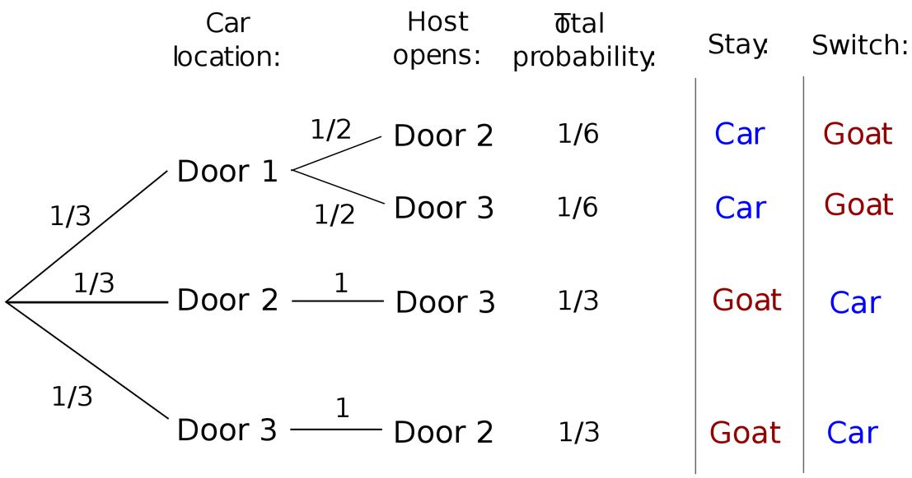
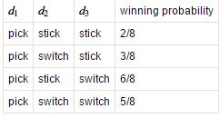

Pernahkah Anda menonton acara Game Show Super Deal 2 Milyar? Dalam acara tersebut, terdapat berbagai tirai, box, dan saku yang di salah satu tempat berisi sebuah hadiah utama. Selain hadiah utama, juga terdapat hadiah yang lebih kecil nilainya serta zonk alias jebakan. Acara tersebut ternyata diadaptasi dari Game Show serupa di Prancis yang dulu sempat heboh karena melatarbelakangi lahirnya sebuah teori probabilitas yang pada awalnya banyak orang yang tidak percaya. Teori tersebut kita kenal dengan Monty Hall Problem yang akan kita bahas pada artikel ini.
Latar Belakang
Monty Hall Problem berasal dari nama presenter yang membawakan sebuah acara Game Show berjudul Let's Make a Deal yaitu Monty Hall. Masalah tersebut mulai diajukan oleh Steve Selvin dalam sebuah paper berjudul "A Problem In Probability" ke American Statistician pada tahun 1975. Namun, hal tersebut mulai terkenal 15 tahun kemudian ketika pada tahun 1990, ada seseorang yang menanyakan masalah tersebut pada kolom surat pembaca milik Marilyn vos Savant dalam majalah Parade. Pertanyaan yang diajukan adalah sebagai berikut:
Saat ini kamu berada dalam acara kuis televisi. Pembawa acara memperlihatkan 3 buah pintu. Dibalik salah satu pintu terdapat hadiah mobil dan dua lainnya terdapat seekor kambing. Kamu memilih sebuah pintu, sebagai contoh pintu no.1. Kemudian, pembawa acara yang mengetahui isi pintu membuka salah satu pintu yang tidak dipilih dan berisi kambing, sebagai contoh pintu no.3. Lalu, pembawa acara menawarkan kepadamu untuk tetap memilih pintu no.1 atau pindah ke pintu no.2. Pertanyaannya, apakah sebaiknya kamu berubah pikiran dan memilih pintu no.2 atau tetap pada pilihan kamu sebelumnya yaitu pintu no.1?
Vos Savant kemudian menjawab bahwa sebaiknya kontestan berubah pikiran dan memilih pintu lainnya karena peluang untuk mendapatkan mobil adalah 2/3 sedangkan jika tetap pada pilihan sebelumnya adalah 1/3. Jawaban tersebut menjadi kontroversi dan menimbulkan banyak tanggapan karena dianggap salah. Padahal, secara matematika pernyataan Vos Savant itu benar adanya.
Monty Hall Problem ini juga pernah disinggung dalam beberapa film. Penulis sendiri mengetahui teori ini dari film "21 The Movie" pada tahun 2008.
Analisis Masalah
Sebelum kita menganalisis masalah ini, kita harus mengetahui aturan-aturan dasar dalam permainan tersebut. Ada 3 aturan yaitu:
- Pembawa acara selalu membuka sebuah pintu yang tidak dipilih oleh kontestan.
- Pembawa acara selalu membuka pintu berisi kambing dan tidak pernah membuka mobil.
- Pembawa acara selalu memberikan kesempatan untuk mengganti pintu yang dipilih.
Dalam menganalisis Monty Hall Problem, kita dapat lakukan dua pendekatan yaitu dengan: 1) Diagram Peluang, dan 2) Perhitungan Matematika.
1. Diagram Peluang
Pada diagram peluang ini, kontestan selalu memilih pintu 1 sebagai pilihan pertama.
Dari diagram tersebut, peluang kontestan mendapatkan mobil jika tetap pada pilihannya adalah 1/6 + 1/6 = 1/3. Sedangkan jika kontestan mengubah pintu pilihannya, maka didapat peluang mendapatkan mobil adalah 1/3 + 1/3 = 2/3.
2. Perhitungan Matematika
Kita dapat menghitung peluang mendapatkan mobil dengan memanfaatkan teorema Bayes. Misalkan pintu tersebut dilabeli dengan 1,2,3. C1 adalah kejadian terdapat mobil pada pintu 1 dan O1 adalah kejadian pembawa acara membuka pintu 1. Jika kita memilih pintu 1 sebagai pintu awal, maka peluang kita mendapatkan mobil jika kita mengubah pilihan pintu adalah:
P(O2 ^ C3) + P(O3 ^ C2)
= P(C3) x P(O2 | C3) + P(C2) x P(O3 | C2)
= (1/3) x 1 + (1/3) x 1
= 2/3.
N-Door Monty Hall Problem
Untuk permainan dengan 4 pintu, maka akan terdapat 4 kondisi yang kita jabarkan dalam tabel berikut peluangnya. Peluang tersebut dapat dihitung menggunakan 2 metode diatas.
Dari tabel tersebut, kita dapat generalisasikan bahwa jika kita bermain dengan N pintu. Peluang terbesar adalah dengan memilih sebuah pintu dan hanya diganti pada kesempatan terakhir dengan besar peluang (N-1/N).
Bonus Video
Agar dapat mengetahui lebih jelas mengenai Monty Hall Problem saya menyarankan untuk menyaksikan video berikut.
Referensi:
Pertanyaan dari Marilyn Vos Savant
Paper Steve Selvin : A problem in probability
Mathworld Wolfram
Wiki